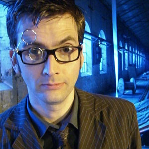

| The First Doctor |
| The Second Doctor |
| The Fourth Doctor |
| The Fifth Doctor |
| The Sixth Doctor |
| The Seventh Doctor |
| The Eighth Doctor |
| The Ninth Doctor |
| The Tenth Doctor |
| The Eleventh Doctor |
| The Twelfth Doctor |
Tenth Doctor
Portrayed by David Tennant.
The Tenth Doctor is the tenth incarnation of the protagonist of the long-running BBC television science fiction series Doctor Who. He is played by David Tennant, who appears in three series as well as eight specials. As with previous incarnations of the Doctor, the character has also appeared in other Doctor Who multimedia.
In the series' narrative, the Doctor is a centuries-old Time Lord alien from the planet Gallifrey who travels in time in his TARDIS, frequently with companions. When the Doctor is critically injured, he can regenerate his body; in doing so, his physical appearance and personality change. Tennant portrays the tenth such incarnation. This incarnation's companions have included working class shop assistant Rose Tyler (Billie Piper), medical student Martha Jones (Freema Agyeman) and fiery temp worker Donna Noble (Catherine Tate); he eventually parts ways with them all by the end of the 2008 series finale, "Journey's End", after which he attempted to travel alone for the duration of the 2008–10 specials.
Executive producer Russell T Davies revived Doctor Who after a 16-year absence with the successful premiere of "Rose" in 2005. Following the BBC's announcement of a second series being commissioned, the story broke that Christopher Eccleston, who played the titular Ninth Doctor, would not be returning for the second series. On 16 April 2005, the BBC announced that David Tennant had been selected for the role of the Tenth Doctor.[15] His first appearance in the series was for 20 seconds following the Ninth Doctor's regeneration at the end of "The Parting of the Ways". His first full episode as the Doctor, barring an appearance in a "mini-episode" during the 2005 Children in Need show, was the 2005 Christmas Special, "The Christmas Invasion". He then appeared in the 2006 series, the second Christmas Special, the 2007 series, the third Christmas Special, and the 2008 series. Rather than a traditional series run, 2009 features a series of five specials and a series of animated shorts, all starring Tennant as the Tenth Doctor; he also guest-starred in a two-episode serial of The Sarah Jane Adventures spin-off in that year. Tennant also appears in two animated serials; The Infinite Quest is counted with the third series, and Dreamland is counted amongst the 2008-10 specials.
The Tenth Doctor generally displays a light-hearted, talkative, easy-going, witty, and cheeky manner, but repeatedly demonstrates a vengeful and unforgiving streak as well. This emerged early on when he sends the Sycorax leader (who is attacking him from behind) falling to his death while commenting that, with him, there are "no second chances".[16] In "School Reunion", he acknowledges that he is less merciful than he used to be and has stuck to his "one warning" code, punishing his enemies if they persist in their hostilities. This is demonstrated in "The Runaway Bride" when he drowns the Empress of Racnoss' children and stoically watches on, prompting Donna Noble to declare that he needs somebody to stop him, and in "The Family of Blood" where he gives each Family member an individual and eternal punishment. His strong personal sense of justice makes him quick to anger when he feels it is violated, as in "New Earth" when he learns of the plague farm run by the Sisters of Plenitude, he brings down their entire operation. When Prime Minister Harriet Jones gives an order to destroy the retreating Sycorax ship against his intentions, he brings down her government in six words, "Don't you think she looks tired?", which reaches the press via her assistant's headset. In "The Waters of Mars", he goes so far as to declare himself above the laws of time, although there are catastrophic consequences as a result.